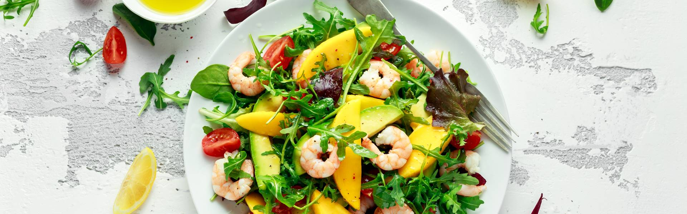

Салат с авокадо и креветками

Ингредиенты:
|
|
- Разложите салат по тарелкам и украсьте перед подачей, например, кедровыми орешками. Они идеально сочетаются со всеми ингредиентами салата!
- Отдельно соедините в миске салатные листья, нарезанный кубиками авокадо, помидоры черри и креветки. Влейте заправку, перемешайте все составляющие салата, добавьте соль и перец по вкусу.
- Для салата необходимо подготовить креветки. Вареномороженые креветки разморозьте и очистите от панциря, они готовы к дальнейшей обработке и не требуют дополнительной варки.
- Приготовьте заправку. Возьмите немного свежей зелени — кинзу, петрушку, укроп — и как следует измельчите. Выдавите чеснок, соедините вместе с остальными ингредиентами заправки, добавьте оливковое масло и лимонный сок и основательно перемешайте.